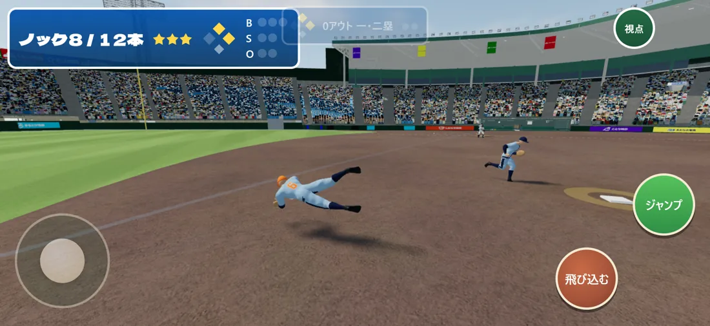
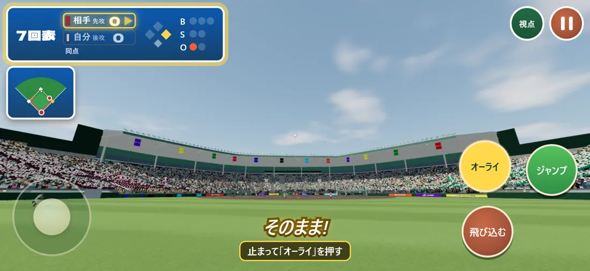
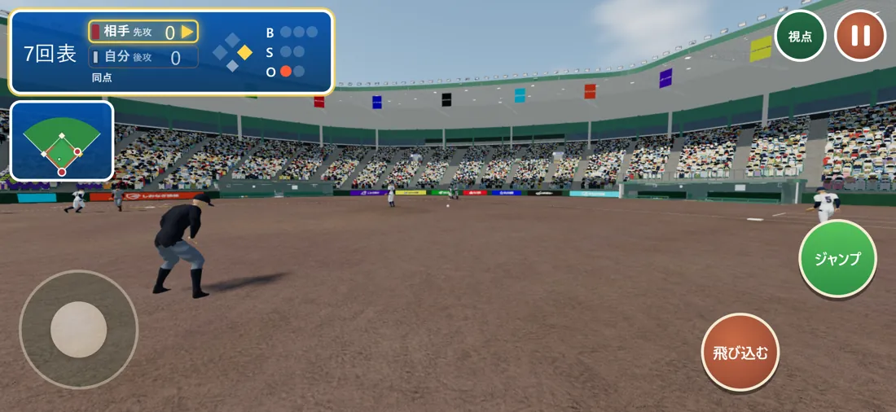
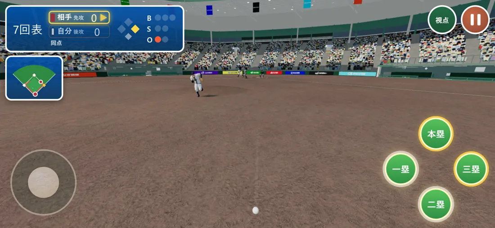
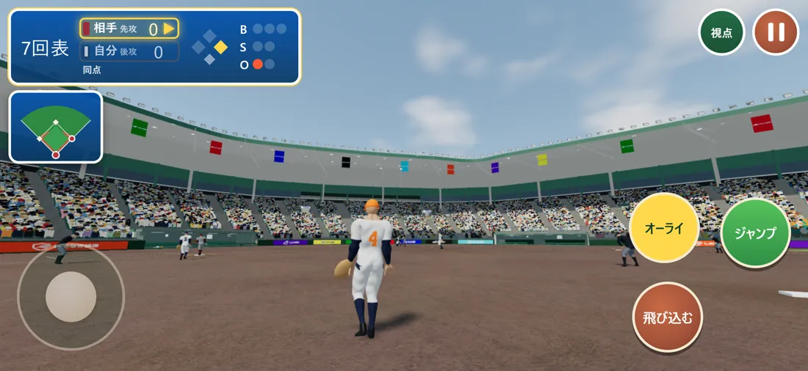
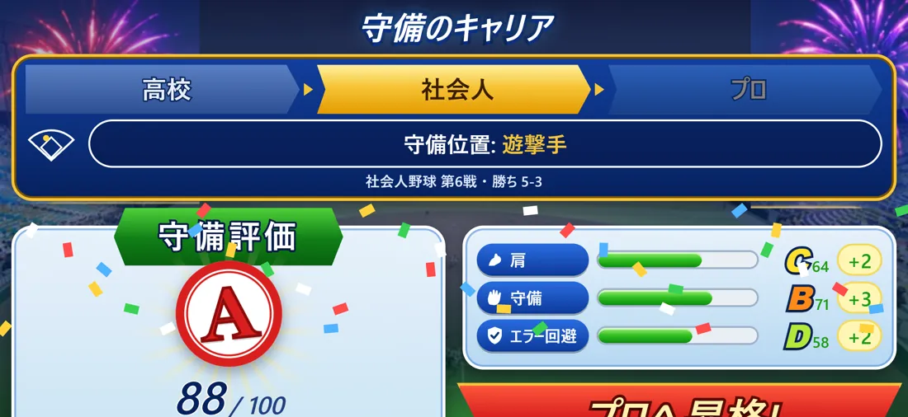
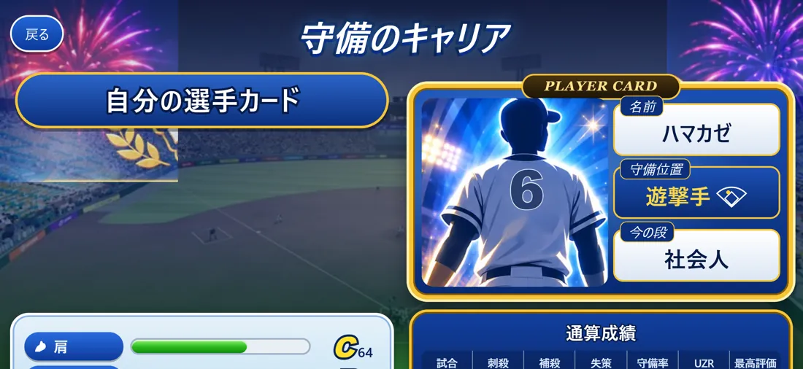
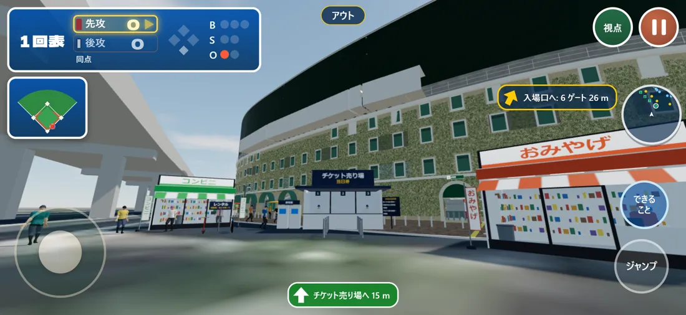

概要
ひとことで: 外野や内野に立って、一人称の目線で打球を捕る、3D の野球の守備ゲーム。
打球の音と角度を見て一歩目を切り、落ちる所まで走って、跳んで、飛び込んで捕る。捕ったら投げたい塁をたたいて送球する。
自分の目線と、肩越しの後ろからの視点を切り替えられる。実況の声と、スタンドの太鼓と歓声が試合に合わせて入る。
守備の試合のほかに、高校からプロを目指す守備のキャリア、ノック、球場で一日を過ごす遊び方がある。
| 名前 | ぼくらのボールパーク |
|---|---|
| ジャンル | 3D の野球ゲーム(守備が主役) |
| 機種と配信 | iPhone 配信中(2026年11月24日から・iOS 15.0 以降) ブラウザ版 yurustudio.github.io/bokuranoballpark/play/(遊べる球場は浜風の球場) Android 近日公開 |
| 遊ぶ人数 | 1人 |
| 言語 | 日本語 |
| 開発 | YURU(個人)・X @apkderete |
| ご注意 | 球場・選手・学校・大会はすべて架空です。実在の名前やロゴは使っていません。 |
遊び方の特徴
- 守備の試合9回までの試合を、一つの守備位置で守ります。自分に関係のない場面は早送りで進み、打球が来る少し前に自分の目線へ戻ります。併殺やタッチアップまで規則は本物の野球に近づけていて、ほかの8人もベースカバーや中継に動きます。
- 守備のキャリア高校から社会人、プロへ。1試合ごとに守備の評価が出て、いい試合が続くと次の段へ上がります。名前と背番号を決めた自分の選手カードに、通算の成績が残ります。
- ノックノッカーの打つゴロ・ライナー・フライを、10本・50本・100本。正しい送球先は場面ごとに変わります。
- ボールパークで過ごす球場の外のチケット売り場から入って、売店をのぞいたり、着替えたり、席で試合を観たり。客席にいると、スタンドに飛んでくる打球を自分で捕ることもできます。
- 守る所を選べる外野・内野のほかに、投手と捕手も選べます。
iPhone 版とブラウザ版で、入っている遊び方が少しちがう時期があります。
画面写真
本物のゲームの画面をそのまま撮った物です(横 2868×1320)。写真を押すと大きい画像が開きます。
画面写真・ロゴ・アイコンをまとめて落とす(zip・約7MB)
ノックで打球に飛び込む(後ろからの視点)落とす 
中堅の目線でフライを追う落とす 
遊撃の目線で打球を待つ落とす 
捕ったら、投げる塁をたたく落とす 
二塁を後ろからの視点で守る落とす 
守備のキャリア: 試合の後の守備評価落とす 
守備のキャリア: 自分の選手カード落とす 
ボールパークで過ごす: 球場の外のチケット売り場と売店落とす


ロゴ・アイコン


色や形を変えずにお使いください。大きさを変えるのはかまいません。
動画
8秒の音なしの画面の動画です(遊撃でゴロを捕って併殺、球場の空からの眺め)。mp4 を落とす
YouTube の紹介動画は準備中です。
開発者・問い合わせ
YURU(個人)。1人でスマホアプリとゲームを作っています。野球が好きで、野球のゲームが多めです。
取材・素材・配信のことは、X の DM でお気軽にどうぞ。
X の DM(@apkderete)配信・動画のガイドライン
ぼくらのボールパークを遊ぶ配信・動画は、自由に作ってください。こちらへの連絡も要りません。
してよいこと
- ライブ配信、録画の実況、ショート動画、切り抜き
- YouTube・Twitch・ニコニコなど、各サービスの機能での収益化(広告・メンバーシップ・投げ銭など)
- このページの画面写真・ロゴ・アイコンを、サムネイルや記事に使うこと
- ゲームの中の音(実況の声・応援・球場の音)が配信や動画の中で流れること
クレジットの書き方(できれば)
概要欄などに、次のように書いてもらえるとうれしいです。書かなくても配信してかまいません。
ぼくらのボールパーク(YURU / @apkderete)
https://yurustudio.github.io/bokuranoballpark/press/
https://yurustudio.github.io/bokuranoballpark/press/
ご遠慮ください
- ゲームの絵・音・声だけを抜き出して配ったり、別の作品に使ったりすること
- 公式・開発者を名乗ること、ゲームの中に無い物をあるように見せること
そのほか
- 企業の案件(広告)の中で取り上げる時は、先に X の DM でひと言ください。
- 動画サイトの自動の判定で、ゲームの音に権利の申し立てが付いた時は、X の DM で知らせてください。こちらから配信・動画に申し立てをすることはありません。
- このガイドラインは、予告なく書き替えることがあります。書き替える前に出した配信・動画は、そのままでかまいません。
2026年11月25日